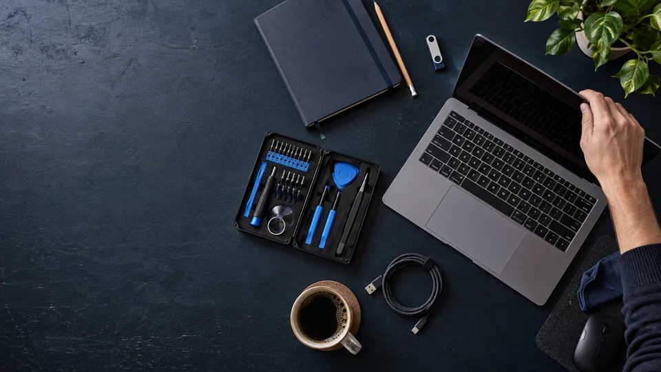

IT, die wieder
funktioniert.
- PC & Netzwerk
- Websites & Apps
- Automatisierung & KI-Assistenten
Solux IT hilft bei Computer- und Netzwerkproblemen, entwickelt Websites, Apps und Onlineshops und vereinfacht wiederkehrende Aufgaben mit Automatisierung und KI-Assistenten. Persönlich, verständlich und passend zu Ihrem Vorhaben.
My Tech Stack.
Die Werkzeuge hinter meinen Lösungen – für persönlichen IT-Support, digitale Projekte und automatisierte Abläufe.
IT-Hilfe für alles,
was laufen muss.
Von der ersten Fehlermeldung bis zum verlässlichen Arbeitsplatz: Wählen Sie den Bereich, der zu Ihrem Anliegen passt.

PC- & Laptop-Reparatur
Wenn der Rechner streikt, beginnt Hilfe mit einer klaren Diagnose.
Leistung ansehen
WLAN & Netzwerk
Stabile Verbindung für Zuhause, Büro und Homeoffice.
Leistung ansehenFernwartung & IT-Hilfe
Softwareprobleme klären, ohne auf einen Vor-Ort-Termin zu warten.
Leistung ansehenNeugeräte & Datenumzug
Vom alten Rechner zum einsatzbereiten neuen Arbeitsplatz.
Leistung ansehenIT-Kaufberatung
Technik auswählen, die zu Ihrer tatsächlichen Nutzung passt.
Leistung ansehen 06 / 07
06 / 07Websites, Apps & Onlineshops
Individuelle Websites, Webanwendungen, Apps und Onlineshops – passend zu Ihrem Vorhaben.
Leistung ansehen07 / 07Automatisierung & Workflows
Weniger Routine, mehr Zeit für Ihr Geschäft: Anfragen sortieren, Daten übertragen und wiederkehrende Aufgaben verbinden.
Automatisierung entdecken →
Technik sollte Ihnen helfen.
Nicht im Weg stehen.
Deshalb beginnt jede Lösung mit Zuhören. Wir erklären, was möglich ist, welche Schritte sinnvoll sind und welcher Aufwand entsteht.
Anliegen besprechenVon der Frage
zur Lösung.
Ein klarer Ablauf hilft Ihnen, schnell zum richtigen nächsten Schritt zu kommen.

Problem schildern
Schreiben Sie, was nicht funktioniert und wie wir Sie erreichen können.
Weg abstimmen
Wir klären, ob Fernwartung, ein Termin oder eine nähere Prüfung sinnvoll ist.
Wieder arbeiten
Wir setzen die vereinbarte Lösung um und erklären Ihnen das Ergebnis.
Klarheit, bevor
es losgeht.
Sie wissen vorher, womit Sie rechnen können. Aufwand, Leistungsumfang und mögliche Zusatzkosten besprechen wir vor dem Start. Eine Anfrage ist noch kein Auftrag.
Fernwartung
Hilfe bei Software, E-Mail und Einstellungen. Abrechnung in 30-Minuten-Einheiten.
Vor Ort & Reparatur
Reparatur, Einrichtung und WLAN-Hilfe. Abrechnung im 15-Minuten-Takt, zuzüglich vereinbarter Anfahrt.
Websites
Für eine kompakte Website mit einer Seite. Weitere Pakete und Leistungsgrenzen finden Sie unten.
Apps & Onlineshops
Apps und Webanwendungen nach Angebot; kleine Shops ab 1.990 €.
Automatisierung & Workflows
Ein einfacher n8n- oder Make-Workflow mit klar vereinbartem Umfang. Komplexere Abläufe erhalten ein individuelles Angebot.
IT-Service: Leistungen & Anfahrt
Werkstattdiagnose · 29 €
Erste Fehlerprüfung nach Absprache. Bei beauftragter Reparatur wird die Diagnosepauschale angerechnet. Sie fällt auch an, wenn eine Reparatur nicht möglich oder nicht wirtschaftlich ist; weitergehende Prüfungen stimmen wir vorher ab.
WLAN & Router · 59 € / Stunde
Einrichtung und Fehlersuche im 15-Minuten-Takt. Router, Repeater und weitere Hardware sind nicht enthalten.
Neugeräte einrichten · ab 89 €
Basiseinrichtung eines funktionsfähigen PCs oder Laptops: vorhandenes Betriebssystem einrichten, Updates und bis zu drei Standardprogramme installieren. Datenumzug, Neuinstallation, Lizenzen und zusätzliche Geräte werden separat angeboten.
Datenumzug · nach Prüfung
Der Preis richtet sich nach Datenmenge, Zustand der Geräte und gewünschtem Umfang. Sie erhalten vor dem Start eine Einschätzung. Keine Datenrettung oder Datensicherung als eigenständige Leistung.
IT-Kaufberatung · 29 € / 30 Minuten
Beratung zu passenden Geräten und sinnvollen Aufrüstungen. Abrechnung in 30-Minuten-Einheiten.
Anfahrt · Wiehl 10 €
Pauschale pro vereinbartem Vor-Ort-Termin innerhalb von Wiehl. Außerhalb von Wiehl stimmen wir die Anfahrt abhängig von der Entfernung vorher ab. Ersatzteile, Softwarelizenzen und zusätzliche Arbeiten werden gesondert vereinbart.
Digitale Projekte: Pakete & Grenzen
Onepager · ab 590 €
Eine responsive Seite mit bis zu fünf Inhaltsabschnitten, einem Gestaltungsentwurf und zwei gebündelten Korrekturrunden. Sie liefern fertige Texte, Bilder und rechtliche Inhalte. Keine individuellen Schnittstellen oder Anwendungsfunktionen.
Unternehmenswebsite · ab 990 €
Bis zu fünf Seiten auf einer gemeinsamen Gestaltung, responsive Umsetzung, ein Entwurf und zwei gebündelte Korrekturrunden. Inhalte werden von Ihnen bereitgestellt; zusätzliche Seiten und Funktionen werden separat vereinbart.
Kleiner Onlineshop · ab 1.990 €
Einrichtung auf einer bestehenden Shop-Plattform mit Standard-Design, bis zu fünf gelieferten Produkten und jeweils einer unterstützten Zahlungs- und Versandoption. Zwei gebündelte Korrekturrunden. Keine individuelle Warenwirtschaft oder Sonderentwicklung.
n8n & Make · ab 290 €
Ein einfacher Workflow zwischen zwei bestehenden Diensten: ein Auslöser, bis zu drei Verarbeitungsschritte und ein gemeinsam geprüfter Testfall. Zugänge werden von Ihnen bereitgestellt; komplexe Logik und individuelle Schnittstellen nach Angebot.
Apps & Webanwendungen · individuelles Angebot
Zuerst klären wir Funktionen, Nutzer, Plattformen und Datenverarbeitung. Danach erhalten Sie ein Angebot mit definiertem Umfang und Meilensteinen.
Projektpreise gelten für den beschriebenen Basisumfang. Hosting, Domains, laufende Pflege, Plattformgebühren, Erweiterungen, API-Nutzung und App-Store-Gebühren sind nicht enthalten. Zusätzliche Leistungen werden vorab angeboten.
Alle genannten Preise sind Endpreise. Gemäß § 19 UStG wird keine Umsatzsteuer berechnet und ausgewiesen.
Häufige Fragen.
Klare Antworten.
Falls Ihre Frage nicht dabei ist, schreiben Sie uns einfach.
Frage stellen01Wie schnell bekomme ich Unterstützung?
Bei akuten Störungen ist Fernwartung oft kurzfristig möglich. Vor-Ort-Termine stimmen wir individuell ab.
02Kommen Sie zu mir oder kann ich ein Gerät vorbeibringen?
Beides ist nach Absprache möglich: Hilfe vor Ort, Fernwartung oder die Abgabe eines Geräts für zeitintensivere Reparaturen.
03Was passiert, wenn eine Reparatur nicht sinnvoll ist?
Dann besprechen wir den Diagnoseaufwand und eine wirtschaftlich passende Alternative, bevor weitere Arbeiten erfolgen.
04Wie werden Kosten berechnet?
Fernwartung kostet 29 € je 30 Minuten, Vor-Ort-Hilfe und Reparaturen 59 € pro Stunde im 15-Minuten-Takt. Anfahrt, Material und zusätzliche Leistungen besprechen wir vorher. Bei Projekten legen wir Umfang und Preis im Angebot fest.

Ein Problem weniger.
Einfach anfragen.
Beschreiben Sie kurz, was nicht funktioniert. Wir melden uns mit einer ersten Einschätzung zum nächsten Schritt.